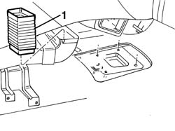
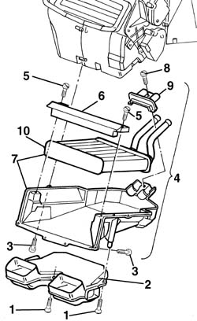
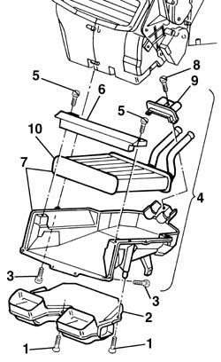

5020A50 heater radiator - r+r
- Path
- Procedures > 50 AUXILIARY UNITS > 5020 HEATER > 5020A box and components > 5020A50 heater radiator - r+r
- Kind
- repair procedure (removal / refitting; the operation number is the code)
- Applies to
- all engines; all production periods
- Interactive page
- https://sloeber94.github.io/elrnDB-a156/en/#/3238283
Applies to: all engines; all production periods
 Removing
Removing
 Refitting
Refitting5010A12 engine/heater line - r r
5010A16 heater/engine line - r r
7040A65 passenger compartment box lock , one , r r (right and left site).
- 5010B44 rear seat air duct - arrange (right and left site).
1. Disconnect the coupling

Applies to: all engines; all production periods
1. Loosen the screws
2. Remove the conveyor
3. Loosen the fixing screws of the radiator support
4. Lowen the support with radiator
5. Loosen the screws
6. Remove the sleeper
7. Extract the support with radiator
8. Loosen the screw
9. Remove the check
10. Remove the radiator from the support

Applies to: all engines; all production periods
Refitting
RemovingVerify that the radiator is completed that it has no leaks, damages or pollution accumulation over the finned surface
Install the radiator on the support
Remove the check and and fix it with the proper screw
Install under the scaffold the support with radiator
Install the sleeper and fix it with the screw
Place the support with radiator in its seat
Tighten the 10 fixing screws of the radiator support
replace the conveyor and fix ii with the related screws
Connect the coupling
- 5010B44 rear seat air duct - arrange (right and left site).
7040A65 passenger compartment box lock , one , r r (right and left site).
Applies to: all engines; all production periods; only with equipment: Right hand drive and Heater
Removing
Refitting5010A12 engine/heater line - r r
5010A16 heater/engine line - r r
7040A65 passenger compartment box lock , one , r r (right and left).
- 5010B44 rear seat air duct - arrange (right and left).
1. Disconnect the sleeve.
Applies to: all engines; all production periods; only with equipment: Right hand drive and Heater
1. Undo the bolts.
2. Remove the duct
3. Unscrew the radiator mount bolts
4. Lower the mount and radiator.
5. Undo the bolts.
6. Remove the crossmember
7. Remove the mount and radiator.
8. Undo the bolt.
9. Remove the retainer.
10. Remove the radiator from the mount.

Applies to: all engines; all production periods; only with equipment: Right hand drive and Heater
Refitting
RemovingCheck that the radiator is intact, that there are no leaks and that there is no damage or deposits of dirt on the finned surface.
Fit the radiator in the mount
Refit the retainer and bolt in place.
Fit the mount and radiator beneath the facia.
Refit the crossmember and bolt in place.
Fit the mount and radiator in its seat.
Tighten the 10 radiator bolts.
Fit the shroud and fix it using the bolts.
Connect the sleeve.
- 5010B44 rear seat air duct - arrange (right and left).
7040A65 passenger compartment box lock , one , r r (right and left).